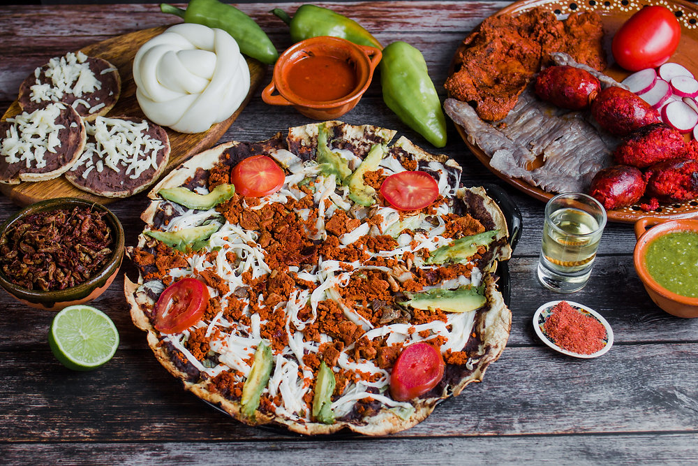
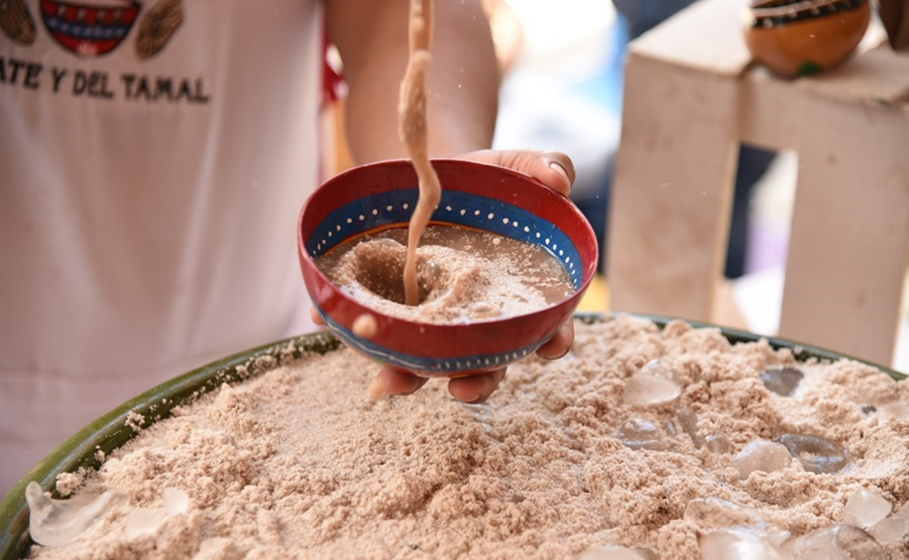
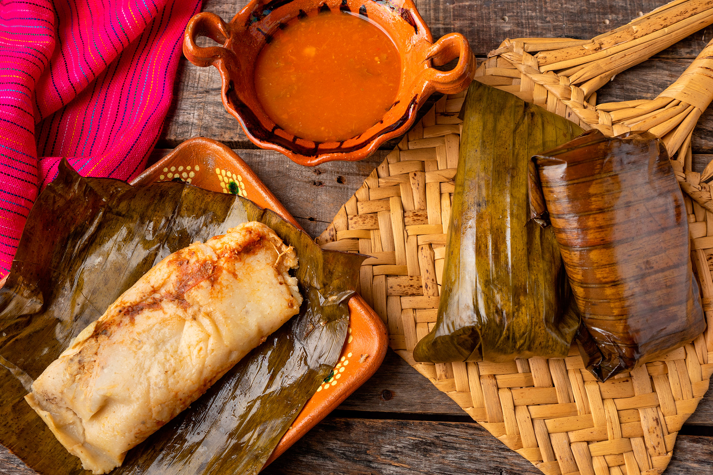

COMIDA TRADICIONAL
La comida oaxaqueña es una de las más ricas y reconocidas de México, tanto por sus sabores como por la complejidad de sus preparaciones. Oaxaca es famosa por sus moles, de los cuales existen siete variedades principales, siendo el mole negro uno de los más representativos. Otros platillos típicos son:
  